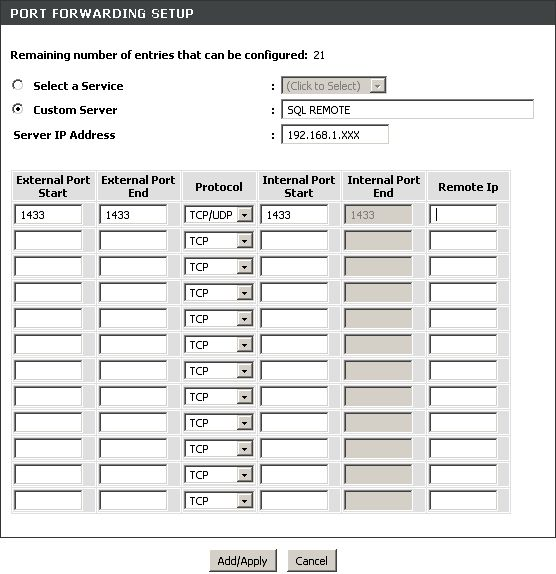

Config Router
If your SQL is on another PC and you need access remotely whit MuMaker, you need to configure your Router or/and FireWall.
If you used Router:

Go to the section of the NAT router and forward ports 1433 TCP and UDP to the SQL Server IP
This screen is different on each router. You find a manual for each router in the concrete and lead.